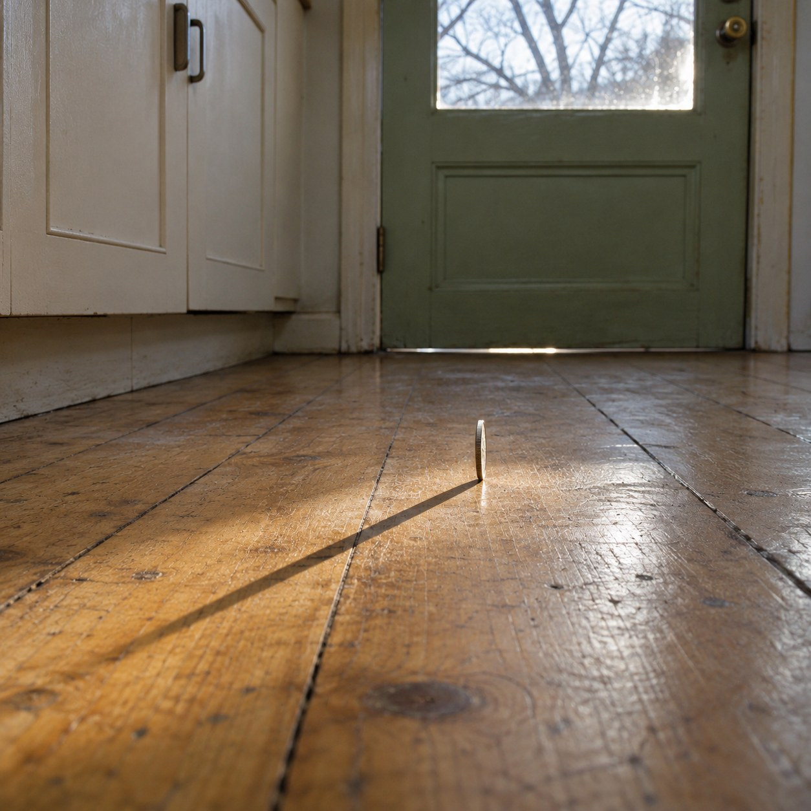
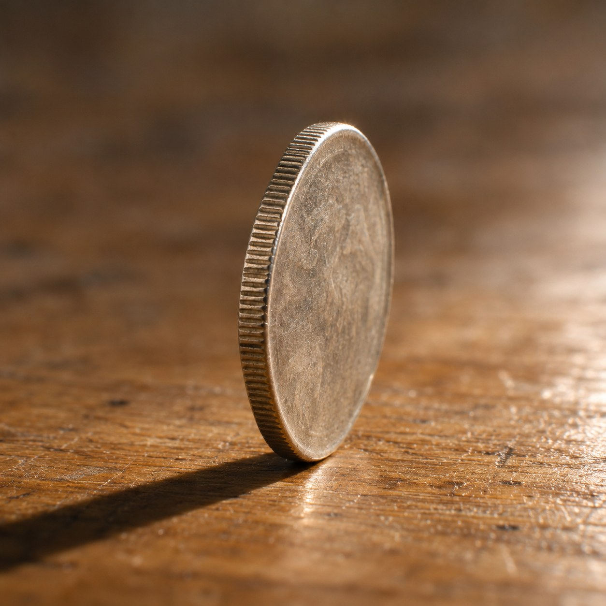

Neither Face Up


A coin toss is a small machine for ending a question. You hand it something you cannot decide, it spins, it falls, and the question comes back as one of two answers. Go or stay. Yes or no. The coin has two faces, so it can only say two things.
That is not quite true. Every coin has a third side, the thin ridged rim that runs all the way round it. We leave it out of the count because a coin almost never lands on it. In 1993 two physicists, Daniel Murray and Scott Teare, worked out that an American nickel tossed onto a hard floor should stand on its edge about once in six thousand throws.
So I took one coin and one question, the one I have never managed to settle about myself, and tossed it onto the kitchen floor, evening after evening, without calling it and without catching it, until it stood.
John Baldessari threw three balls in the air thirty-six times, hoping they would make a straight line, and kept the best attempt. I was not after the best answer. I wanted the one the coin was never built to give.
It stood on the 4,207th toss, on the boards by the back door. I have not picked it up. I keep that door shut now, and walk round it.
Every other toss gave me an answer, and I let each one go. This is the only one I kept. Seen from where I stand, it is not heads and it is not tails. It is a coin turned side on, a thin bright line, all edge.